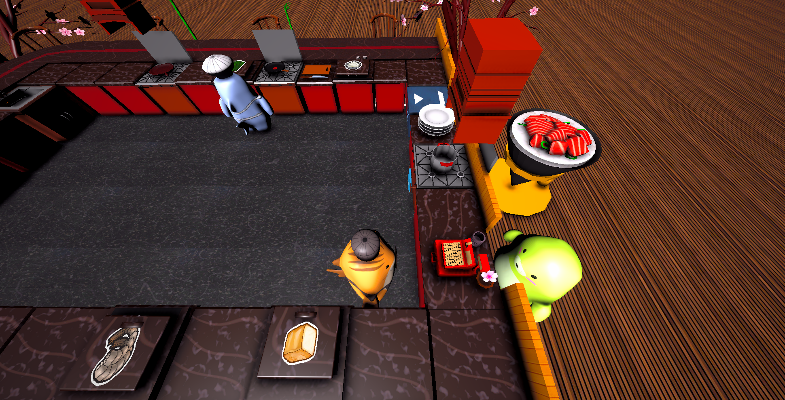
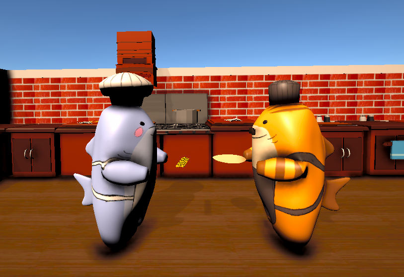
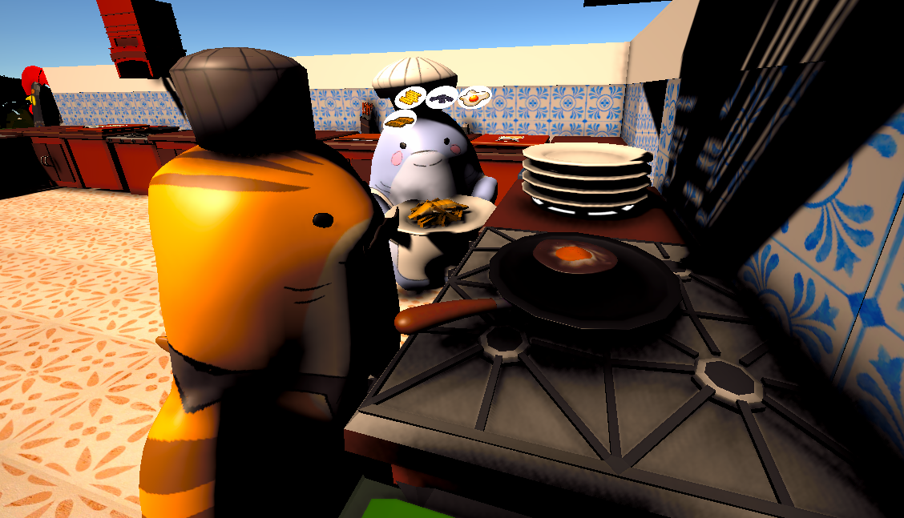

Co-op cooking game focused on order systems, customer flow, timers and gameplay coordination.
Table for Two is a fast-paced co-op cooking game where players manage orders, prepare recipes, and coordinate under time pressure. The focus is on system-driven gameplay including delivery logic, timers, and customer flow.
Order manager architecture, timed gameplay loops, NPC state handling, UI synchronization, and scalable gameplay systems.


